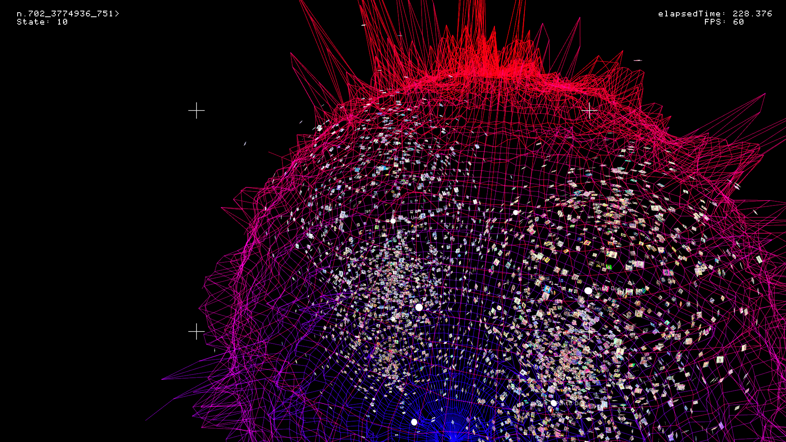
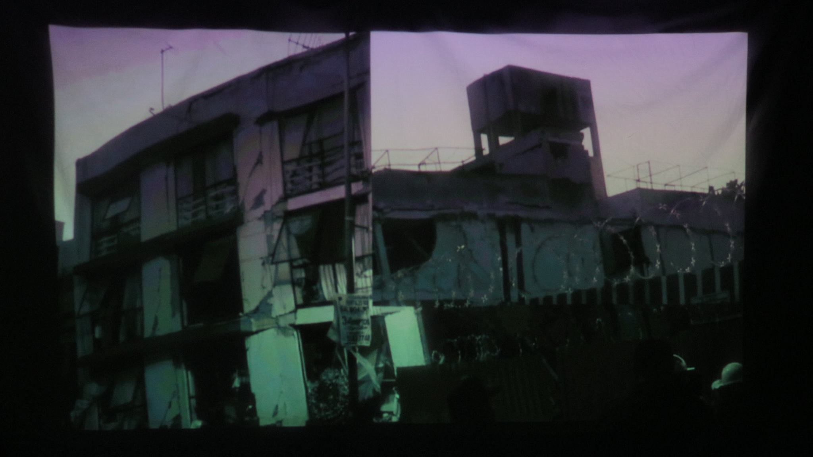

Página web interactiva. Three.js, Python y HTML. Exposición Creación con Algoritmos. Centro de Cultura Digital. Julio, 2020. EmMeio #12 Exhibition. MedialLab BR. Octubre, 2020.
Serie Impresión en glicée sobre papel. Concierto de live coding conducido por datos. Exposición Creación en Movimiento. Jóvenes Creadores, Primer Periodo. Antiguo Colegio de San Ildefonso. Septiembre - Noviembre, 2019.
Instalación audiovisual en computadora de placa reducida. Festival Hello World 1.0. Ciudad de México. Abril, 2018.